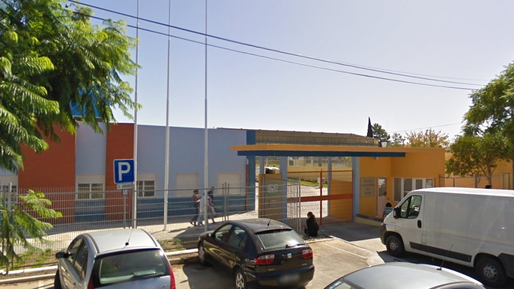

Sobre mim
O meu nome é João Patrocínio, tenho 18 anos e estou a estudar na Escola Superior de Técnologia de Setúbal.
Os meus hobbies incluem: ouvir música, jogar videojogos, e programar.
O meu nome é João Patrocínio, tenho 18 anos e estou a estudar na Escola Superior de Técnologia de Setúbal.
Os meus hobbies incluem: ouvir música, jogar videojogos, e programar.
Concluí o Ensino Secundária na Escola Secundária da Moita, no curso profissional de Técnologias e Programação de Sistemas de Informação.
Durante o 11º ano fiz um estágio curricular com a duração de 2 meses na empresa WhiteRoad, no Barreiro, onde fiz desenvolvimento Web com técnologias como Laravel, Node.js, MySQL, e outras.
No 12º ano, continuei o mesmo estágio na mesma empresa.
Como Projeto de Aptidão Profissional, o projeto final do curso, desenvolvi uma aplicação Web de classificação de filmes chamada FilmeRate.
Lista de links para redes sociais, contacto, e outras:
 @patrocinio_jp
@patrocinio_jp